Et si vous pouviez prendre n'importe quelle stratégie de trading trouvée en ligne, la donner à Claude, et lui faire automatiquement coder un script PineScript fonctionnel, sans aucune compétence en programmation. Dans cette vidéo, je vais vous montrer exactement comment j'ai fait cela avec une stratégie simple basée sur les bandes de Bollinger et le RSI. Je vais vous montrer comment fonctionne la stratégie, comment j'ai rédigé le prompt pour Claude, et comment importer le PineScript terminé directement dans TradingView. Assurez-vous de regarder jusqu'à la fin car je vais également vous montrer comment obtenir l'accès à tous mes prompts, stratégies et configurations. Passons aux choses sérieuses. Très bien, les gars, étape numéro un,
Interface & Outils : TradingView (Pine Editor et Graphique de prix)
Contenu textuel & Code : Code source en Pine Script (gestion des signaux d'achat/vente, entrées de stratégie) et graphique de prix avec indicateurs de type bandes ou moyennes mobiles et oscillateur en sous-fenêtre.
Action / Démonstration : Présentation simultanée du code de script de trading et de son application visuelle sur un graphique de prix pour illustrer la création automatisée d'une stratégie.
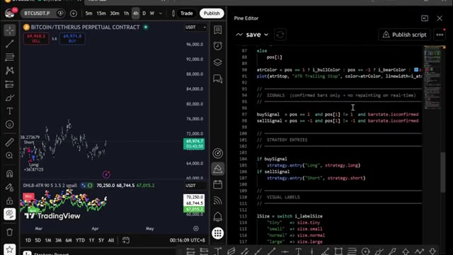
🔍 Agrandir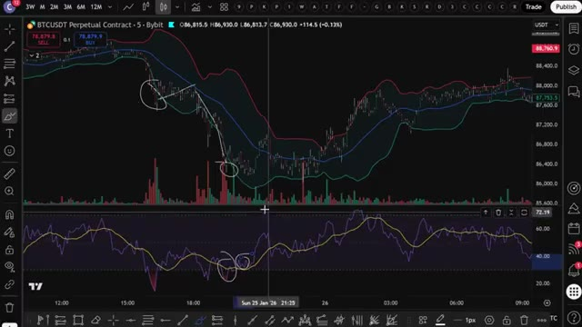
🔍 Agrandirinscrivez-vous sur un échange. Pour cette stratégie, nous allons utiliser 2Bit. C'est l'un de mes meilleurs échanges pour le trading de futures, et ils ont de solides bonus pour les débutants, comme un bonus futures de 30 USDT plus le niveau VIP un pendant un mois. Si 2Bit ne vous convient pas, vous pouvez utiliser Blofen comme alternative. Blofin ne nécessite pas de vérification KYC obligatoire pour le trading de base, ce qui signifie que vous pouvez commencer à trader immédiatement. De plus, les nouveaux utilisateurs peuvent gagner jusqu'à 5 000 USDT grâce aux bonus de dépôt et de volume de trading. Je vais mettre les deux en lien
Interface & Outils : Interfaces de sites web de courtiers/échanges crypto (Toobit et BloFin).
Contenu textuel & Code : Offres de bonus d'inscription, montants de bonus (30 USDT, 5000 $), et caractéristiques clés de plateformes (effet de levier jusqu'à 150x, frais de trading).
Action / Démonstration : Navigation et présentation des plateformes de trading recommandées pour l'inscription.
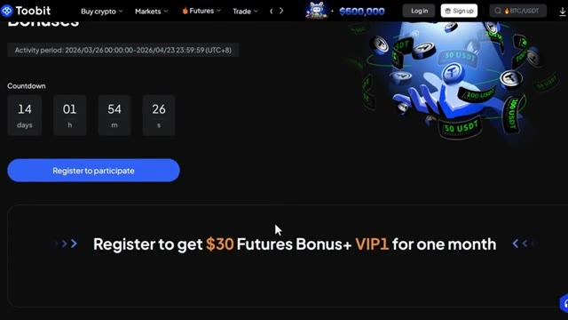
🔍 Agrandir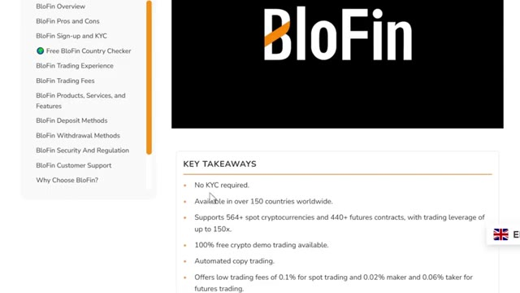
🔍 Agrandiren bas. Très bien, maintenant pour la stratégie elle-même, nous allons utiliser Trading View. J'ai un lien en bas vers mon lien Trading View. Si vous l'utilisez, vous obtiendrez une petite réduction lorsque vous achèterez la version pro. Je vais utiliser le graphique du Bitcoin. La première chose à faire est de configurer les bandes de Bollinger sur votre Trading View. Allez maintenant dans les indicateurs, tapez Bandes de Bollinger, et cliquez sur celui-ci. Ensuite, vous devrez modifier le paramètre par défaut juste ici pour cette stratégie de trading spécifique. Allez dans la section de la longueur, définissez-la à 30, et gardez l'écart type à 2. Si vous voulez personnaliser votre
Interface & Outils : TradingView, graphique de prix en chandeliers japonais avec volume en bas.
Contenu textuel & Code : Paire BTCUSDT Perpetual Contract, unité de temps 5m, échange Bybit, données de prix actuelles et indicateur de volume.
Action / Démonstration : Présentation du graphique Bitcoin sur TradingView pour la mise en place de la stratégie de trading.
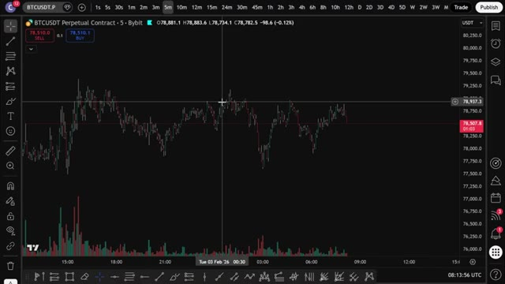
🔍 Agrandirchoix, n'oubliez pas que la ligne centrale représente la moyenne mobile basée sur la valeur de longueur et que les lignes inférieure et supérieure sont des lignes d'écart type. Maintenant que vous avez configuré les bandes de Bollinger, il est temps d'ajouter le RSI, l'indice de force relative. Pour cela, retournez dans les indicateurs et tapez RSI. Cliquez sur le premier résultat, qui devrait être l'indice de force relative.
Interface & Outils : TradingView
Contenu textuel & Code : Paramètres des bandes de Bollinger : Basis (bleu), Upper (rouge), Lower (vert), Background, avec options de précision et cases à cocher pour l'affichage sur l'échelle de prix.
Action / Démonstration : Configuration des options de style des bandes de Bollinger sur le graphique.
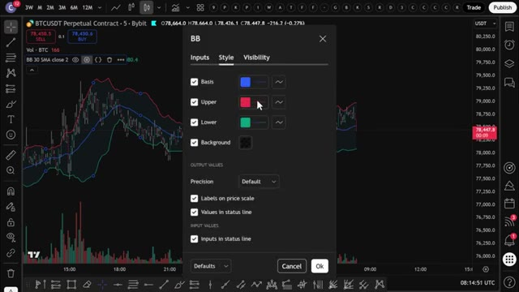
🔍 AgrandirMaintenant, vous devez vous assurer que la bande supérieure est sur le chiffre 70 et que la bande inférieure est sur 30. Le RSI est un outil très utile pour déterminer si une cryptomonnaie est surachetée ou survendue. S'il est au-dessus de 70, cela signifie qu'elle est surachetée. S'il est en dessous de 30, elle est survendue. Maintenant, comparons ces deux indicateurs pour trouver des transactions potentiellement rentables.
Interface & Outils : Graphique TradingView (BTCUSDT Perpetual Contract sur Bybit).
Contenu textuel & Code : Paramètres du RSI (Style) avec les valeurs des bandes configurées : RSI Upper Band à 70, RSI Middle Band à 50, et RSI Lower Band à 30.
Action / Démonstration : Configuration des niveaux des bandes supérieure (70) et inférieure (30) de l'indicateur RSI.
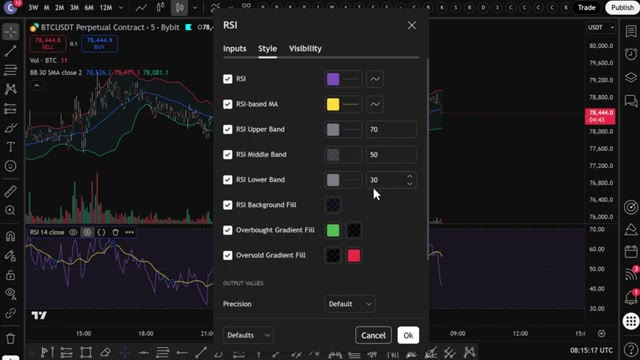
🔍 AgrandirSi le prix dépasse la bande de Bollinger supérieure, vous pouvez entrer en position courte. Mais si le prix passe sous la bande de Bollinger inférieure, vous pouvez entrer en position longue. Parfois, le prix peut traverser ces bandes à plusieurs reprises, et vous pouvez voir beaucoup de faux signaux juste ici. En fait, si vous agissiez sur chaque signal, vous perdriez probablement beaucoup d'argent.
Interface & Outils : TradingView
Contenu textuel & Code : BTCUSDT Perpetual Contract, Bandes de Bollinger (BB 30 SMA close 2), Volume, RSI (14 close)
Action / Démonstration : Analyse graphique montrant un faux signal où le prix dépasse la bande de Bollinger supérieure.
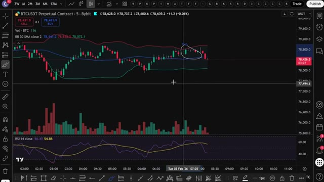
🔍 Agrandirdonc nous ne pouvons pas faire cela à coup sûr dans O. Pour résoudre ce problème, vous allez ajouter notre deuxième indicateur, le RSI. Si le prix est tombé sous la bande de Bollinger inférieure et que le RSI chute au niveau inférieur autour de 30, vous ouvrirez une position acheteuse. Mais si le prix dépasse la bande de Bollinger supérieure et que le RSI atteint le niveau d'environ 70, il est temps d'ouvrir une position vendeuse. Laissez-moi vous donner quelques exemples ici.
Interface & Outils : TradingView
Contenu textuel & Code : BTCUSDT Perpetual Contract - 5m - Bybit, Bandes de Bollinger (BB 30 SMA close 2), et indicateur RSI (RSI 14 close).
Action / Démonstration : Analyse technique combinant les bandes de Bollinger et le RSI pour identifier des opportunités d'achat.
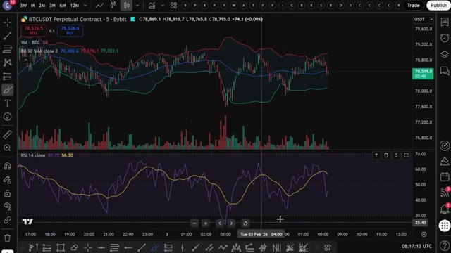
🔍 AgrandirSi le prix commence à tomber en dessous de la bande de Bollinger inférieure, comme vous pouvez le voir ici, mais que le RSI n'est pas encore tout à fait à son niveau idéal, cela montre qu'il est survendu. Vous pouvez patienter jusqu'à ce que le RSI chute au niveau de 30, ce qu'il finira par atteindre comme vous pouvez le voir ici. Juste au moment où le RSI tombe au niveau de 30 ou en dessous, vous verrez que le prix du Bitcoin se trouve sur la bande de Bollinger inférieure ou en dessous.
Interface & Outils : TradingView
Contenu textuel & Code : Graphique de prix BTCUSDT (contrat perpétuel sur Bybit) en unité de temps de 5 minutes, bandes de Bollinger (lignes rouge, bleue, verte), histogramme de volume et indicateur RSI (lignes violette et jaune) oscillant sous le graphique principal.
Action / Démonstration : Analyse technique combinant les bandes de Bollinger et le RSI pour identifier des conditions de survente et planifier un point d'entrée.
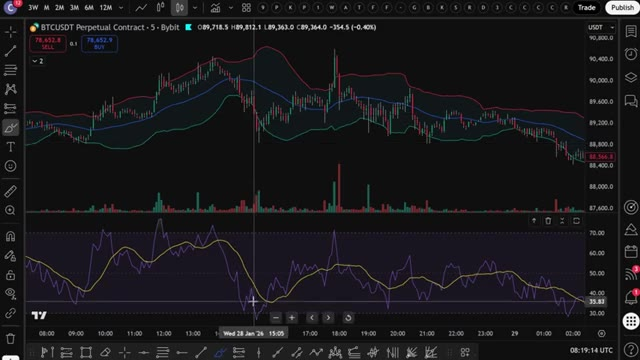
🔍 AgrandirEnsuite, vous pouvez prendre une position longue sur Bybit ou Bitunix. Comme vous pouvez le voir, après avoir ouvert votre position longue, le prix rebondit à la hausse comme prévu. Si vous aimez ouvrir des positions courtes, la stratégie est la même. Ouvrez simplement une position courte si le prix du bitcoin atteint la bande de Bollinger supérieure et, en même temps, atteint la zone de surachat sur le RSI, le niveau 70 ou au-dessus.
Interface & Outils : TradingView
Contenu textuel & Code : Graphique de prix BTCUSDT (Timeframe 5m), indicateur de type canaux/moyennes mobiles (lignes rouge, bleue, verte), indicateur de volume, oscillateur en bas (RSI ou stochastique), et un outil de position longue (zone verte/rouge) mis en évidence sur le graphique.
Action / Démonstration : Démonstration de l'ouverture d'une position longue suite au signal sur l'indicateur, illustrant le rebond du prix à la hausse.
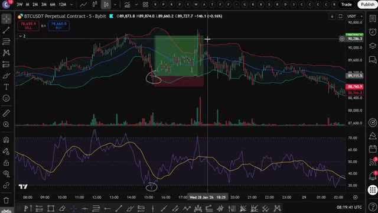
🔍 AgrandirUne chose à noter est que si le marché évolue de manière latérale, cette stratégie n'est pas la meilleure. La plupart des stratégies de trading ont du mal à prédire les mouvements du marché dans ces conditions. Mais revenant au graphique, vous pouvez voir ici que le prix du Bitcoin chute en dessous des bandes de Bollinger alors que le RSI est dans la zone de survente. Mais le problème est que le prix continue de s'effondrer encore plus. Si vous étiez entré dans le trade juste ici, vous auriez subi une perte massive. Pour éviter cette perte d'argent, vous devez prêter attention à la détection des premiers signes de grands mouvements de prix avant même qu'ils ne se produisent. Regardez comment les bandes de Bollinger sont fines maintenant et proches l'une de l'autre. Vous pouvez voir le
Interface & Outils : TradingView (Graphique de trading en ligne)
Contenu textuel & Code : Paire BTCUSDT Perpetual Contract, bougies en 5 minutes, bandes de Bollinger (lignes rouge, bleue et verte), indicateur RSI (lignes violette et jaune) dans le panneau inférieur, et volumes de transactions.
Action / Démonstration : Analyse technique du cours du Bitcoin en temps réel, observation de la volatilité et des indicateurs de momentum.
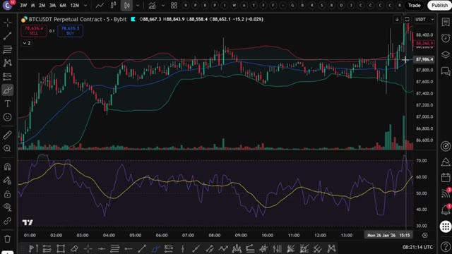
🔍 AgrandirLe marché évolue de manière latérale, ce qui n'est pas bon. De plus, le RSI évolue également entre les lignes inférieure et supérieure et ne dépasse pas ou ne descend pas en dessous des points majeurs de surachat et de survente. Tout cela est un très très grand signal d'alarme. Nous ne voulons pas entrer ici. Dans ces cas-là, évitez simplement le trade. Mais laissez-moi vous montrer l'exemple parfait pour ouvrir le trade parfait qui vous donnera ce taux de réussite attendu de 92 %. Ici, le prix tombe en dessous de la bande de Bollinger inférieure, puis repasse au-dessus. Mais ensuite, le prix commence à redescendre en formant un nouveau plus bas par rapport au plus bas précédent.
Interface & Outils : TradingView (interface graphique de trading)
Contenu textuel & Code : Graphique de chandeliers japonais pour BTCUSDT, bandes de Bollinger (lignes rouge, bleue, verte), indicateur RSI en bas avec des zones encadrées montrant l'absence de cassure des niveaux de surachat et de survente.
Action / Démonstration : Analyse technique du marché montrant la consolidation latérale des prix et le comportement du RSI sans tendance claire.
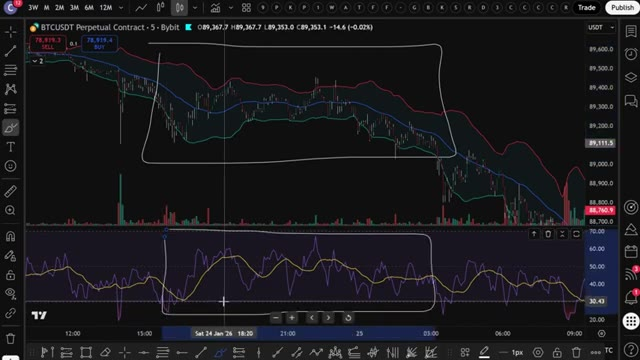
🔍 AgrandirMais si vous jetez un œil au RSI, vous pouvez voir que le RSI vient de faire un creux plus haut. C'est une divergence haussière. La divergence haussière se caractérise par la formation de creux progressivement plus bas par les bougies de prix. En même temps, le RSI forme des creux progressivement plus hauts. C'est l'une de vos meilleures chances d'ouvrir une position acheteuse parce que vous aurez de fortes chances de faire du profit.
Interface & Outils : TradingView
Contenu textuel & Code : Graphique BTCUSDT (Bybit), bandes de Bollinger, volumes et indicateur RSI en bas avec des annotations de creux.
Action / Démonstration : Analyse de la divergence haussière entre le prix du Bitcoin et le RSI.
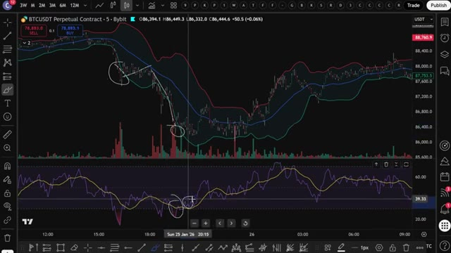
🔍 AgrandirD'un autre côté, si le prix s'envole vers la bande de Bollinger supérieure puis redescend, ensuite le prix se remet à monter, en faisant un nouveau plus haut supérieur au plus haut précédent. Mais si vous jetez un œil au RSI, vous pouvez voir que le RSI vient de faire un nouveau plus haut inférieur. C'est une divergence baissière. L'opportunité parfaite pour ouvrir une position short. Utiliser les bandes de Bollinger et le RSI en même temps, c'est une stratégie vraiment, vraiment, vraiment très bonne. Et j'ai eu tellement de succès avec ça, comme vous pouvez clairement le voir ici. Donc maintenant vous comprenez exactement comment cette stratégie
Interface & Outils : TradingView
Contenu textuel & Code : Paire BTCUSDT Perpetual (Bybit), bandes de Bollinger, indicateur RSI en sous-fenêtre avec deux courbes.
Action / Démonstration : Analyse technique mettant en évidence un nouveau plus haut sur le prix accompagné d'un plus haut inférieur sur le RSI (divergence baissière).
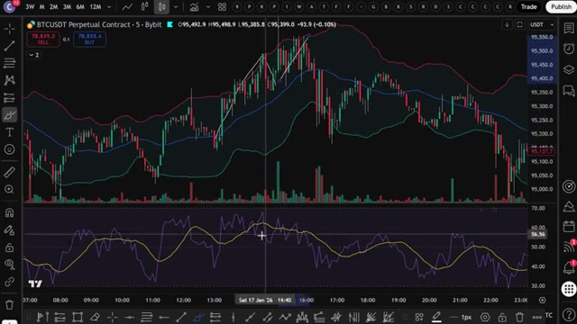
🔍 Agrandirfonctionne manuellement. Mais c'est là que ça devient vraiment intéressant. Au lieu de surveiller des graphiques toute la journée et de faire cela manuellement, j'ai donné cette stratégie exacte à Claude et je lui ai demandé de m'écrire un Pine Script complet. Pour que TradingView puisse détecter automatiquement ces signaux pour moi. Et voici le prompt que j'ai utilisé. Je vais l'afficher à l'écran dès maintenant pour que vous puissiez le copier exactement. C'est tout. C'est le prompt complet. Vous le collez dans Claude. J'utilise Claude Code ici et en quelques secondes, il crache un Pine Script entièrement fonctionnel dans un bloc-notes. Ouvrez ce fichier, appuyez sur Ctrl+A pour
Interface & Outils : Windows PowerShell, terminal Claude Code, éditeur de texte.
Contenu textuel & Code : Invite textuelle (prompt) demandant à Claude d'écrire un script Pine Script pour TradingView utilisant les Bandes de Bollinger (longueur 30, écart-type 2) et le RSI (longueur 14), avec gestion des divergences haussières et baissières, des conditions d'entrée/sortie, des signaux visuels et des alertes.
Action / Démonstration : Saisie et envoi d'un prompt détaillé à l'assistant IA Claude Code pour générer automatiquement le code Pine Script de la stratégie de trading.
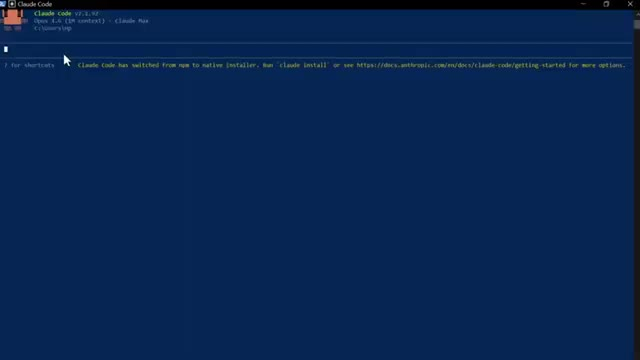
🔍 Agrandir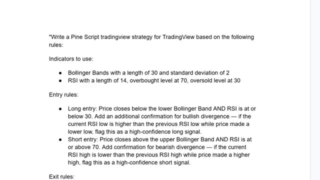
🔍 Agrandir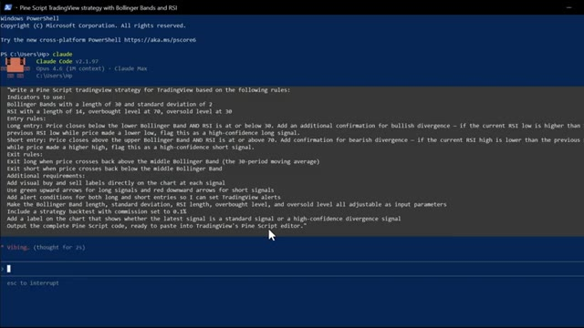
🔍 Agrandirsélectionnez tout le code, puis faites contrôle plus c pour le copier. C'est tout ce dont vous avez besoin. Maintenant, mettons-le dans TradingView. Ouvrez TradingView et allez sur n'importe quel graphique. Je vais utiliser le Bitcoin à nouveau. En bas à droite de l'écran, cliquez sur l'onglet de l'éditeur PineScript, celui qui ressemble à un pin. Une fois l'éditeur ouvert, vous y verrez du code par défaut. Sélectionnez-le entièrement et supprimez-le. Ensuite, collez le code que Claude vient de vous donner. Cliquez maintenant sur Ajouter au graphique. C'est le bouton en haut à droite de l'éditeur PineScript. TradingView va compiler le script et l'appliquer directement sur votre graphique. Et voilà. Vous pouvez voir le
Interface & Outils : TradingView
Contenu textuel & Code : Paire BTCUSDT Perpetual Contract sur l'échange Bybit, unité de temps 5m, affichant les bougies de prix et l'histogramme des volumes.
Action / Démonstration : Visualisation du graphique du Bitcoin sur TradingView avant l'intégration du code Pine Script.
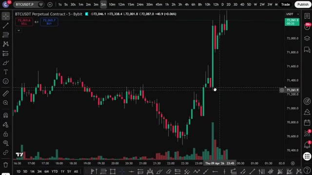
🔍 AgrandirLes bandes de Bollinger sur le graphique, le panneau RSI en dessous, et les signaux d'achat et de vente tracés automatiquement. Des flèches vertes pour les achats, des flèches rouges pour les ventes. Les signaux de divergence à haute confiance sont étiquetés séparément pour que vous sachiez quelles configurations sont les plus solides. Pour configurer des alertes, cliquez sur l'icône de réveil en haut de TradingView, sélectionnez créer une alerte et dans le menu déroulant des conditions, vous verrez les conditions d'alerte que Claude a ajoutées, signal d'achat et signal de vente. Configurez-les et TradingView vous avertira dès qu'un signal se déclenche. Donc maintenant, au lieu de
Interface & Outils : TradingView (intégrée à Bybit)
Contenu textuel & Code : Graphique BTCUSDT Perpetual Contract en unité 5 minutes, Bandes de Bollinger, indicateur RSI avec moyennes mobiles, signaux 'Long' (flèches vertes), 'Sell' / 'Short' (flèches rouges) et volumes.
Action / Démonstration : Analyse technique automatisée de la stratégie de trading basée sur les bandes de Bollinger et le RSI avec affichage des signaux d'entrée et de sortie.
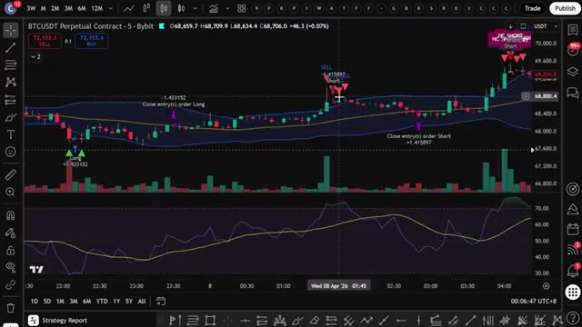
🔍 Agrandiren surveillant le graphique manuellement, TradingView fait tout le travail à votre place. Dès que les conditions des bandes de Bollinger et du RSI s'alignent, en particulier sur une divergence, vous recevez une alerte directement sur votre téléphone. Maintenant, si vous voulez aller encore plus loin et faire en sorte que cela ouvre des trades automatiquement sur votre exchange dès qu'un signal se déclenche, j'ai ce qu'il vous faut. J'ai créé un groupe privé où je partage tous mes cas d'utilisation pour Claude Code, qu'il s'agisse de l'intégrer avec Telegram, TradingView, ou de rechercher des baleines sur Hyperliquid. Tout cela de manière automatique. Tout ce que je vous ai montré aujourd'hui se trouve entièrement dans le groupe. Et j'ajoute constamment de nouvelles choses, de nouvelles stratégies, de nouveaux prompts,
Interface & Outils : TradingView, interface de courtage/échange avec carnet d'ordres et Hyperliquid Leaderboard.
Contenu textuel & Code : Graphiques en chandeliers, indicateurs techniques (RSI, bandes de Bollinger, volumes), carnets d'ordres, informations de positions ouvertes (ETH/USDT, effet de levier 5x, prix d'entrée, PnL) et tableau de classement des traders. [DESC_IMAGE_3] Visualisation des performances et des classements des traders sur une plateforme de finance décentralisée pour illustrer des stratégies avancées.
Action / Démonstration : Explications face caméra et analyse conceptuelle des marchés.
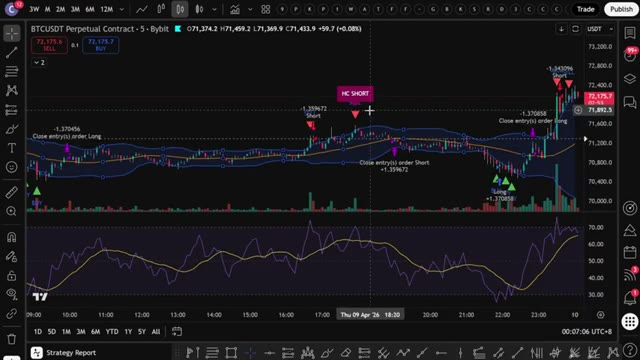
🔍 Agrandir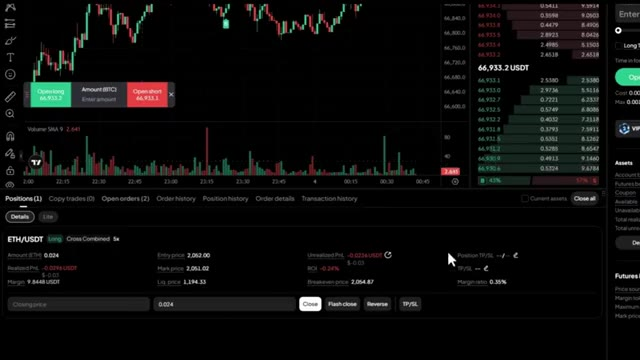
🔍 Agrandir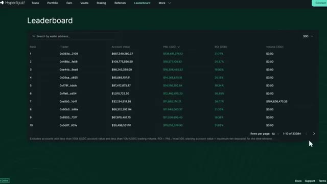
🔍 Agrandirde nouvelles intégrations. Chaque fois que je construis quelque chose de nouveau, ça va directement là-dedans. Le prix est de 79,99 $ par mois. Et honnêtement, quand on y pense, ce que c'est vraiment, la configuration de trading par IA la plus avancée disponible pour les traders particuliers en ce moment, constamment mise à jour avec tout inclus.
Interface & Outils : Plateforme e-commerce Whop et interface web de cours ou documentation d'Alex Carter.
Contenu textuel & Code : Tarification d'abonnement (79,99 $/mois), sections de fonctionnalités pour le contrôle des graphiques, lecture de données OHLCV, et intégration avec TradingView.
Action / Démonstration : Présentation commerciale de l'offre d'abonnement et de ses fonctionnalités techniques.
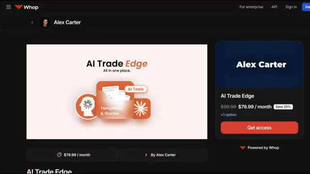
🔍 Agrandir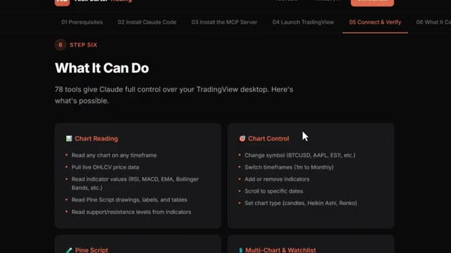
🔍 AgrandirCe n'est pas beaucoup d'argent. Un seul bon trade suffit à couvrir ça. Mais les 100 premiers membres bloquent ce tarif de façon permanente. Après cela, le prix augmente. Donc, plus vous entrez tôt, meilleure est l'offre. Le lien est dans la description. Inscrivez-vous dès maintenant avant que le prix n'augmente. Vous ne pouvez vraiment pas vous permettre de rater ça. Et c'est tout les gars. C'est comme ça qu'on prend une stratégie d'Internet, qu'on la donne à Claude et qu'on obtient un script Pine fonctionnel sur TradingView. Pas de code, pas de surveillance manuelle des graphiques. Si vous voulez voir une démonstration complète de la façon dont je trade en utilisant seulement mon Telegram et la démonstration complète de tous les cas d'utilisation sur
Interface & Outils : Whop (plateforme e-commerce) et TradingView (graphique de trading).
Contenu textuel & Code : Tarification d'abonnement (79,99 $/mois au lieu de 99,99 $), graphique de prix Bitcoin (BTCUSDT), indicateurs de moyenne mobile/bandes, indicateur de momentum/RSI en sous-fenêtre et outil de ratio Risque/Rendement (RR 2.1).
Action / Démonstration : Présentation de l'offre commerciale du groupe de trading et démonstration d'analyse technique avec position de trading simulée sur graphique.
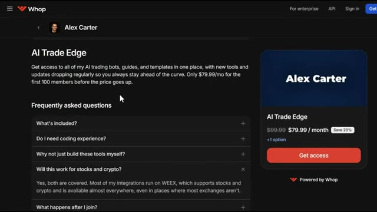
🔍 Agrandir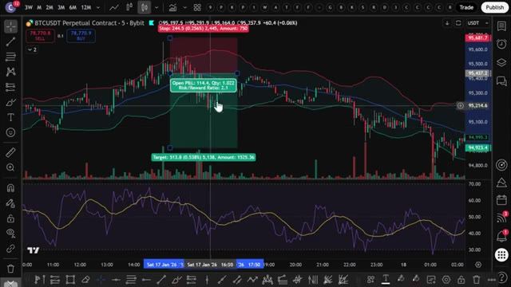
🔍 AgrandirTradingView, clique sur la vidéo qui apparaît à l'écran en ce moment même. Si tu as trouvé cela utile, laisse un pouce bleu. Cela aide vraiment la chaîne. Abonne-toi si ce n'est pas déjà fait, et je te vois dans la prochaine.
Interface & Outils : Aucune interface visible
Contenu textuel & Code : Aucun contenu visible
Action / Démonstration : Aucune action visible